09:00–12:00, second half of the morning
Final Practice, 13:00–17:00
Differential expression analysis
How to detect Differential Expressed Genes DEGs
...etc.
Microarray era...
But
Many false positive errors
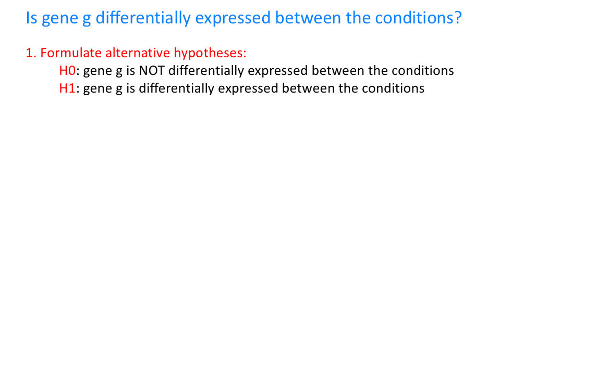
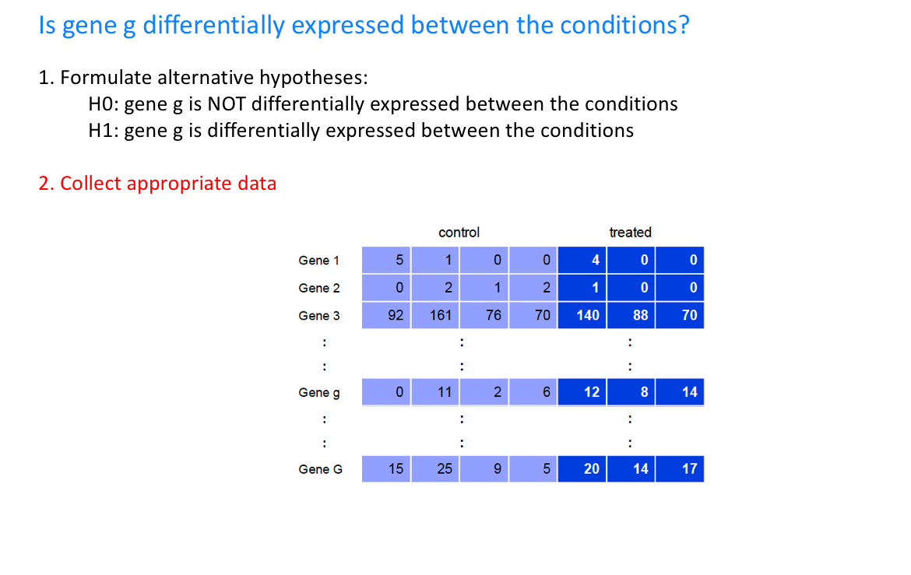
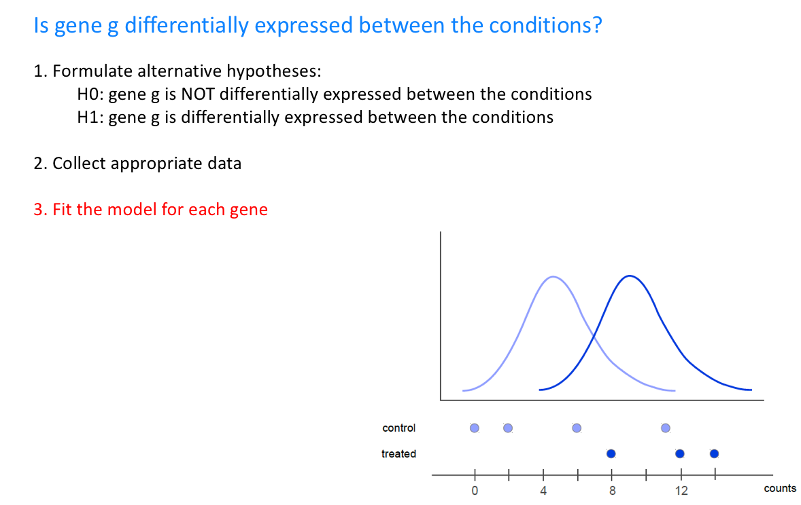
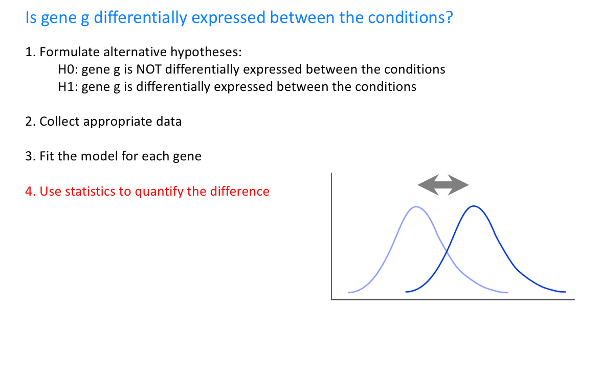
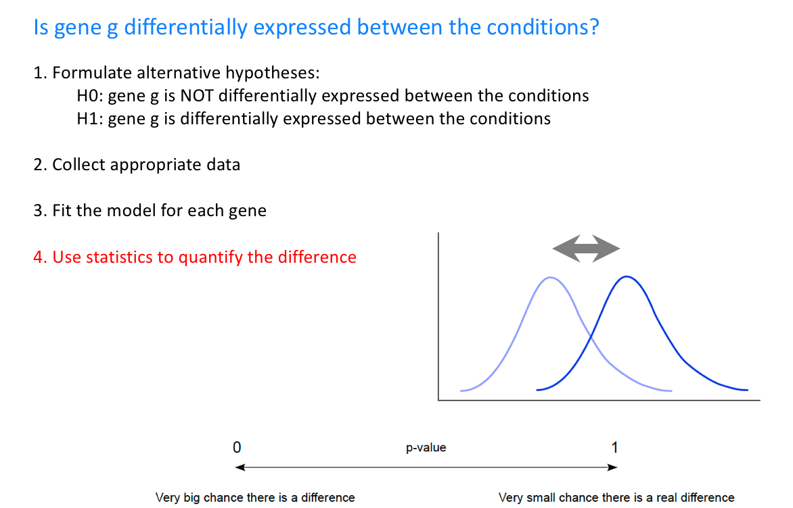
Keywords:
etc...
share of sixes after 10, 100, … 10,000 throws · 1/6
Neyman–Pearson · frequentist
A probability is a long-run frequency.
Throw it once and the word has nothing to attach to. You may only ask about what you could repeat.
→ P( data | hypothesis ) — the p-value
how sure I am of this die's chance of a six, after 10 (dashed), 100 and 1,000 throws · 1/6
Bayes · subjective probability
A probability is how sure you are, and evidence sharpens it.
The same throws, arriving one at a time. You never wait for the long run — early on you simply have a wider answer. Which is the only kind left when a thing happens once.
→ P( hypothesis | data ) — prior × likelihood
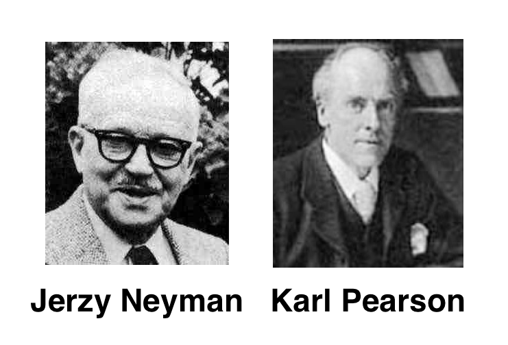
Obtaining a p-value less than 0.05 provides evidence to reject the null hypothesis at the 5% significance level, but it does not mean we must reject it
Rejecting the null hypothesis suggests strong evidence in favor of the alternative hypothesis, but it doesn’t definitively mean the alternative hypothesis is true
The test provides evidence against the null hypothesis but does not mean the alternative hypothesis is true, nor does it mean we can fully accept the alternative hypothesis
Hypothesis testing only indicates evidence, not a conclusive acceptance of any hypothesis
What happens if the null hypothesis cannot be rejected?
If you're not comfortable with this sort of reasoning, you might consider using Bayesian statistics or a machine learning approach...
you are choosing genes
but normally practically we say, they are differentially expressed genes...
What is the FPR (False Positive Rate)?
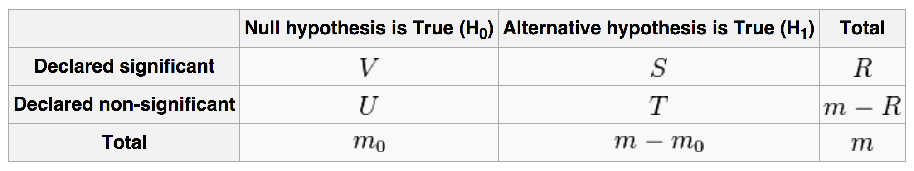
FPR: False Positive Rate
FDR: False Discovery Rate
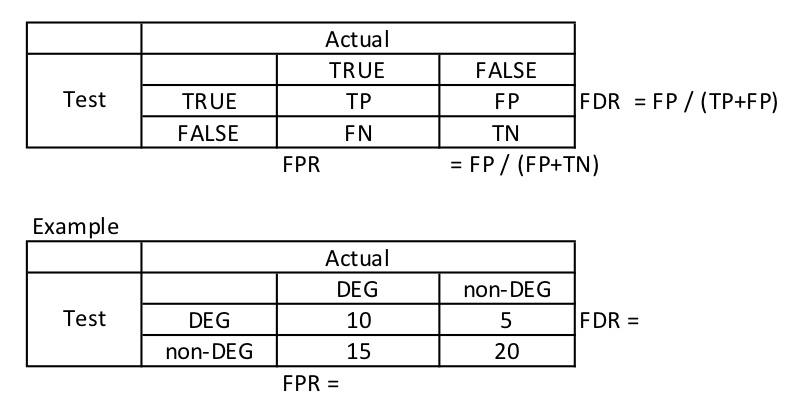
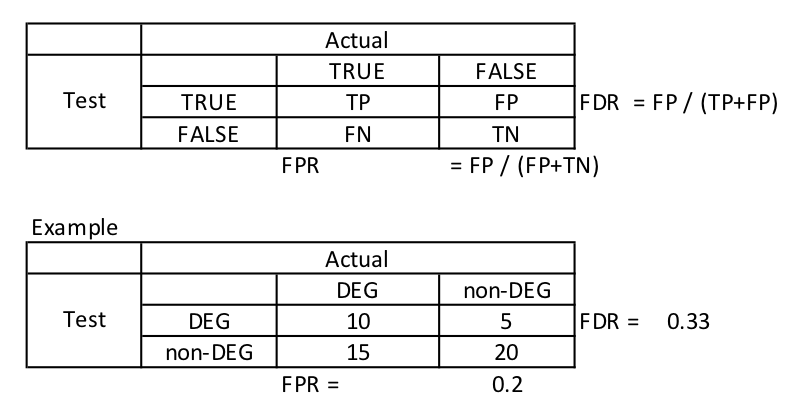
Example
What is the difference?
p-value < 0.05
5% of the time, we may incorrectly reject the null hypothesis (i.e., incorrectly detect non-DEGs as DEGs)
e.g. In a dataset of 10,000 non-DEGs, this could lead to approximately 500 non-DEGs being falsely identified as DEGs.
FDR < 0.05
Among the genes detected as differentially expressed (DEGs), we expect that approximately 5% are false positives (non-DEGs).
e.g., if 500 DEGs are detected, an FDR < 0.05 would suggest that around 25 of these could be non-DEGs (false positives).
Wikipedia
In statistics, the multiple comparisons, multiplicity
or multiple testing problem occurs when one considers
a set of statistical inferences simultaneously.
Errors in inference, including confidence intervals
that fail to include their corresponding population
parameters or hypothesis tests that incorrectly reject
the null hypothesis are more likely to occur when
one considers the set as a whole.14.3% familywise error rate
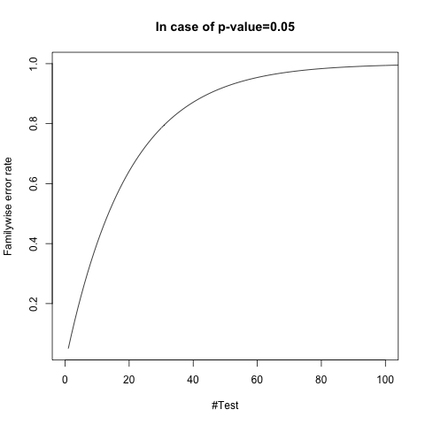
R
p_value <- c()
for(i in 1:100000){
x1 <- rnorm(20)
x2 <- rnorm(20)
pv <- t.test(x1, x2)$p.value
p_value <- c(p_value, pv)
}
hist(p_value)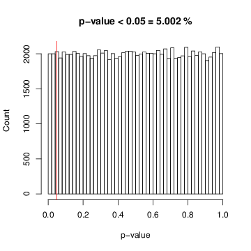
How many false positives if you reject the null hypotheses with significance level 5%?
FPR = 5%, #False Positives = 100,000 * 0.05 = 5,000, in case that you reject null hypotheses with significance level 5%
e.g. 5,000 genes might be detected for differentially expressed genes in 100,000 genes, even if they were not differentially expressed
Correction familywise error rate
Calculate FDR from p-values
Correction familywise error rate
R
q.values <- p.adjust(p.values, method = "bonferroni")Calculate FDR from p-values
R
q.values <- p.adjust(p.values, method = "BH")p.adjust(p, method = "BH"), and edgeR's FDR column is exactly this.Algorithm
1.Sort p-values:
2.Calculate:
3.If then
Five genes, already sorted by p-value. N = 5
| m | gene | p |
|---|---|---|
| 1 | GeneA | 0.002 |
| 2 | GeneB | 0.013 |
| 3 | GeneC | 0.039 |
| 4 | GeneD | 0.041 |
| 5 | GeneE | 0.600 |
Apply the three steps, then count the genes you would call at
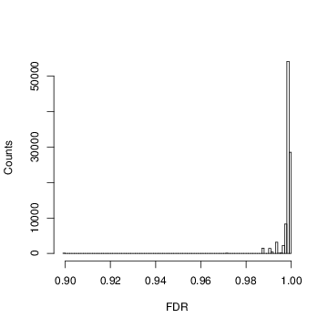
Mostly ~ 1.0, null hypotheses cannot be rejected
Problems
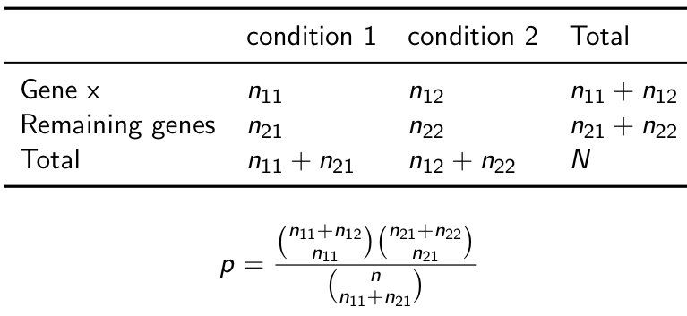
Problem
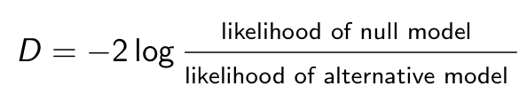
A likelihood function (often simply the likelihood)
is a function of the parameters of a statistical model
given data.(Wikipedia)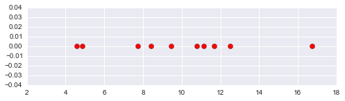
Supposing that
figures come from: https://www.kobiwa.jp/2019/12/03/post-777/ (Japanese)
Normal distribution probability density function
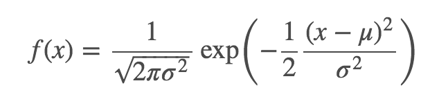
Likelihood function
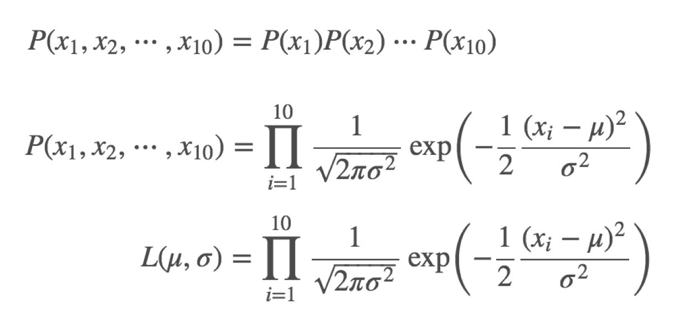
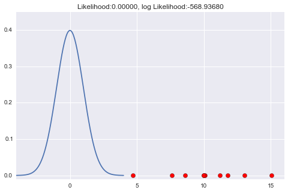
Likelihood = -568.93...
figures come from: https://www.kobiwa.jp/2019/12/03/post-777/ (Japanese)
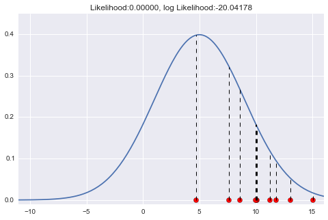
Likelihood = -20.04... got bigger
figures come from: https://www.kobiwa.jp/2019/12/03/post-777/ (Japanese)
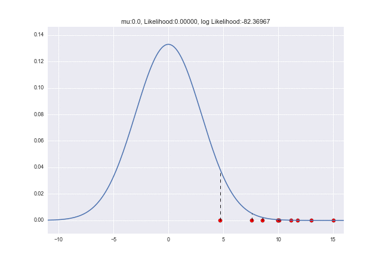
figures come from: https://www.kobiwa.jp/2019/12/03/post-777/ (Japanese)
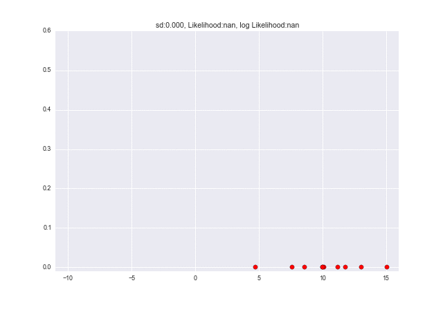
figures come from: https://www.kobiwa.jp/2019/12/03/post-777/ (Japanese)
Joint probability
Likelihood
Imagine a cheating coin toss...
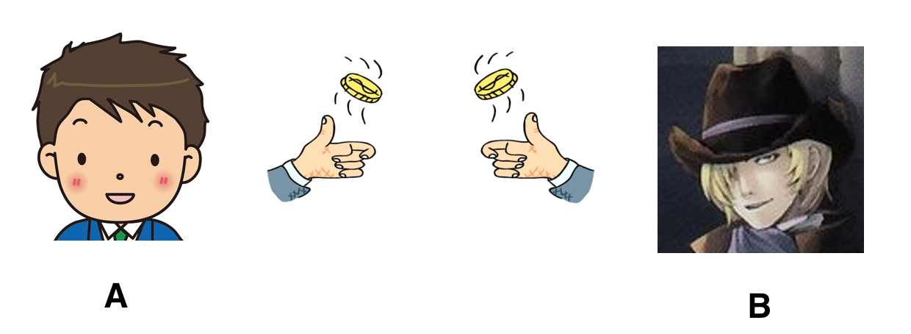
Coin toss 10 times each
Are they using certainly the same coin?
Parameter (of distribution function): the probability of heads H
null model:
alternative model:
Likelihood
Likelihood ratio
D (Deviance) becomes low if the two coins are same...
p-value
> pchisq(7.36, df=1, lower.tail=FALSE)
[1] 0.00667Theoretical
Practical
Benchmarking
Goal: Understand the biological meaning of differentially expressed genes (DEGs)
Gene Ontology analysis
Pathway analysis
Structured controlled vocabularies ontologies that describe gene products in terms of their associated
http://www.geneontology.org/GO.doc.shtml
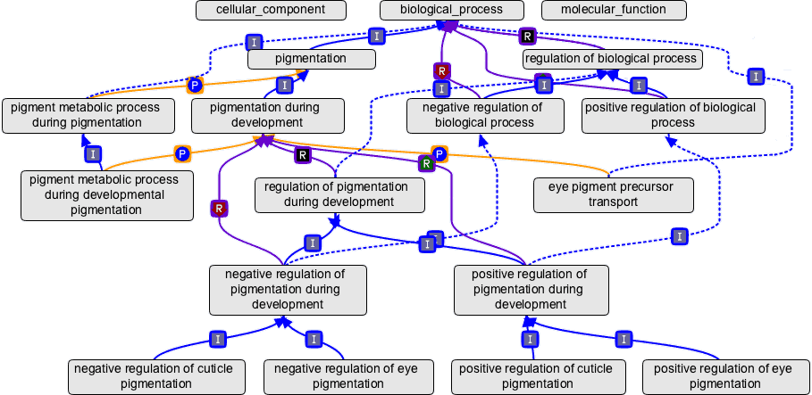
Example
Example
Search
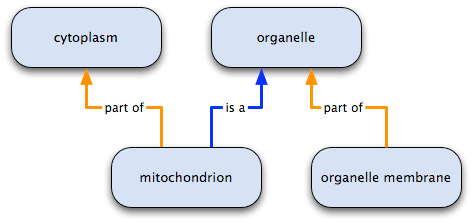
mitochondrion has two parents: it is an organelle and it is part of the cytoplasm
organelle has two children: mitochondrion is an organelle, and organelle membrane is part of organelle
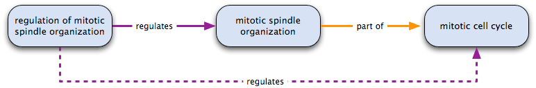
regulation of mitotic spindle organization regulates mitotic spindle organization and mitotic spindle organization is part of the mitotic cell cycle
therefore regulation of mitotic spindle organization regulates the mitotic cell cycle
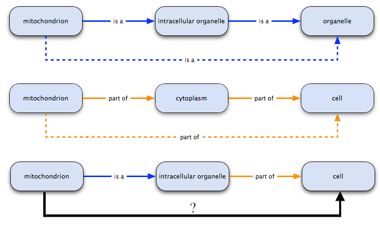
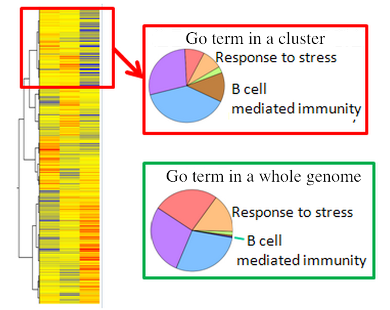
Aravind Subramanian, et al., PNAS, 102 (43), 15545--15550, 2005.
Over-Representation Analysis (ORA)
Gene Set Enrichment Analysis (GSEA)
| DEGs | non-DEGs | |
|---|---|---|
| In GO term | a | b |
| Not in term | c | d |
| DEGs | non DEGs | |
|---|---|---|
| GOID:0001 | 10 | 100 |
| Other than GOID:0001 | 100 | 1000 |
> fisher.test(matrix(c(10,100,100,1000), nrow=2))
Fisher's Exact Test for Count Data
data: matrix(c(10, 100, 100, 1000), nrow = 2)
p-value = 1| DEGs | non DEGs | |
|---|---|---|
| GOID:0001 | 25 | 100 |
| Other than GOID:0001 | 100 | 1000 |
> fisher.test(matrix(c(25,100,100,1000), nrow=2))
Fisher's Exact Test for Count Data
data: matrix(c(25, 100, 100, 1000), nrow = 2)
p-value = 0.0004687No arbitrary cutoff needed!
The Walking Statistic:
Positive ES: Gene set enriched at top (up-regulated)
Negative ES: Gene set enriched at bottom (down-regulated)
Setting: 7 genes ranked by logFC, 3 genes in "metabolism" gene set
Rank Gene logFC Gene set Score Walking score
1 GeneA 2.5 Metabolism +1 +1
2 GeneB 2.0 Metabolism +1 +2
3 GeneC 1.8 Metabolism +1 +3 ← ES = +3
4 GeneD 1.2 Other -1 +2
5 GeneE 0.8 Other -1 +1
6 GeneF 0.3 Other -1 0
7 GeneG -0.2 Other -1 -1ES = +3 (positive → metabolism genes up-regulated)
Rank Gene logFC Gene set Score Walking score
1 GeneA 2.5 Metabolism +1 +1 ← ES = +1
2 GeneB 2.0 Other -1 0
3 GeneC 1.8 Other -1 -1
4 GeneD 1.2 Metabolism +1 0
5 GeneE 0.8 Other -1 -1
6 GeneF 0.3 Metabolism +1 0
7 GeneG -0.2 Other -1 -1ES = +1 (small positive → weak enrichment)
Interpretation: Case 1 shows clear up-regulation of metabolism genes, while Case 2 shows random distribution.
Calculate actual ES from real data
Real data:
Rank Gene logFC Gene set Walking score
1 GeneA 2.5 Metabolism +1
2 GeneB 2.0 Metabolism +2
3 GeneC 1.8 Metabolism +3 ← Actual ES = +3
4 GeneD 1.2 Other +2
5 GeneE 0.8 Other +1
6 GeneF 0.3 Other 0
7 GeneG -0.2 Other -1Actual ES = +3
Generate null distribution by permutation
Permutation: Randomly shuffle gene set labels (keep ranking unchanged)
Permutation 1:
Rank Gene logFC Shuffled set Walking score
1 GeneA 2.5 Other -1
2 GeneB 2.0 Metabolism +0 ← ES = +0
3 GeneC 1.8 Other -1
...
Permutation 2:
1 GeneA 2.5 Metabolism +1 ← ES = +1
2 GeneB 2.0 Other 0
3 GeneC 1.8 Metabolism +1
...Repeat 1000+ times → Get 1000+ null ES values
Compare actual ES with null distribution
Null ES distribution from permutations:
Frequency
| /\
| / \
| / \
|__/______\______ ES value
-2 -1 0 1 2 3
↑
Actual ES = +3p-value = (Number of permutation ES ≥ +3) / (Total permutations)
Example: If only 5 out of 1000 permutations gave ES ≥ +3 → p-value = 5/1000 = 0.005
Interpretation: Only 0.5% chance to get ES ≥ +3 by random chance → Statistically significant enrichment
ORA (Over-Representation Analysis)
GSEA (Gene Set Enrichment Analysis)
Statistical Methods for DEG Detection
Gene Ontology Structure
Functional Analysis